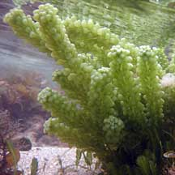
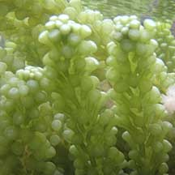
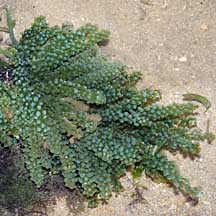
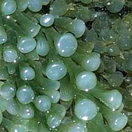
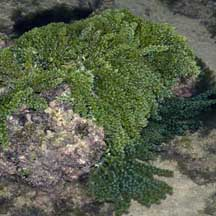
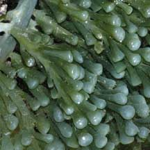

|
|
|
green seaweeds text index | photo
index
|
| Seaweeds > Division Chlorophyta > Family Caulerpaceae > genus Caulerpa |
| Bell
sea grapes seaweed Caulerpa racemosa var turbinata* Family Caulerpaceae updated Jan 13 Where seen? This juicy looking seaweed is made up of little bell-shaped 'grapes'. Small clumps sometimes seen on our Southern shores on rocks and coral rubble near reefs on our Southern shores. Features: The seaweed resembles bunches of little bells, with a flattened top. Each bunch about 6-8cm long, with bell-shaped bead (the 'grapes') arranged on a vertical 'stem'. These bunches of 'grapes' emerge from a long horizontal 'stem' that creeps over hard surfaces or just under the sand. Colours range from green to bluish-green. Sometimes confused with Round sea grape seaweeds (Caulerpa lentillifera). Here's more on how to tell apart the sea grapes seaweeds. |
|
 Terumbu Semakau, May 10  |
 Pulau Semakau, May 08  |
 Pulau Jong, Jul 06  |
*Species are difficult to positively identify without close examination of internal parts.
On this website, they are grouped by external features for convenience of display.
| Bell sea grapes on Singapore shores |
On wildsingapore
flickr
|
| Other sightings on Singapore shores |
Links
|